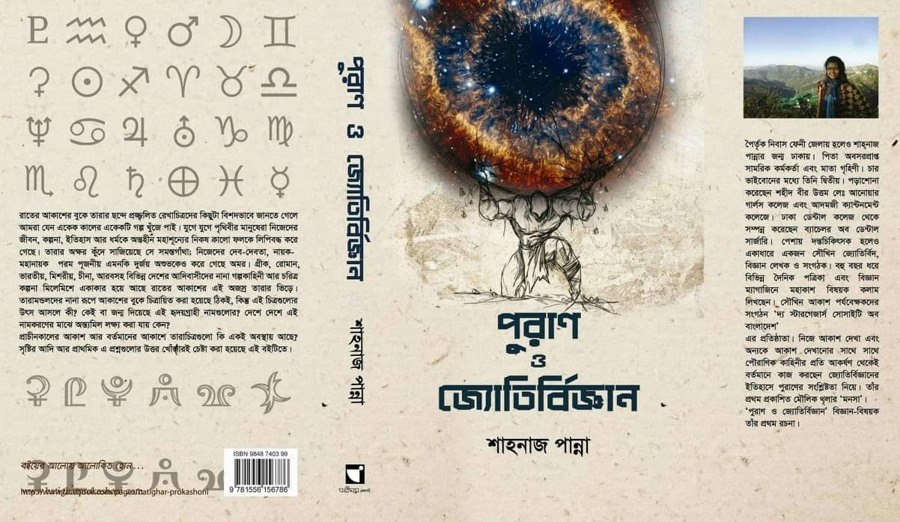
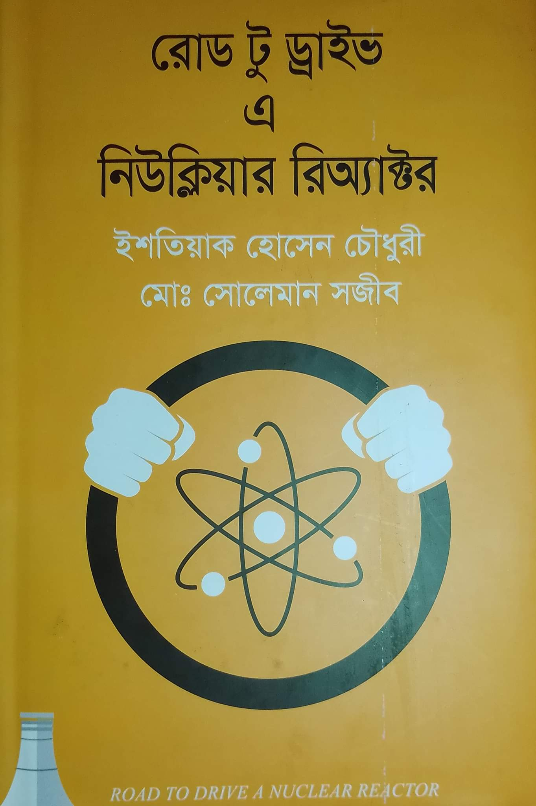

All my book reviews
আকাশের তারামণ্ডল সম্পর্কে আগ্রহ জন্মে কোভিডের লকডাউনের সময়, '২০ এর এপ্রিল বা মে মাসের দিকে। কোন এক বিজ্ঞানচিন্তা সংখ্যায় দুটো তারামণ্ডল সম্পর্কে লেখা পড়ে। লেখা ছিল সামান্য, হারকিউলিস আর কালপুরুষ তারামন্ডল নিয়ে। এই ২ টা মন্ডলের নাম আগেও শুনেছিলাম, খুব বেশি কিছু জানতামও না। আগ্রহের শুভ সূচনা হয় তখন যখন লেখাটির শেষে বলা ছিল এরুপ আরো ৮৮ টি তারা মন্ডল রয়েছে...
Read more
প্রফেসরেরা বলতো আলোর বেগ নাকি অনেক বেশি। সেই বেগে নাকি কেও কখনো চলতে পারে না। আবার আলোর বেগের কাছাকাছি বেগে গেলে নাকি স্থান সংকুচিত হয়! আবার শুনি ব্ল্যাক হোল থেকে নাকি কিছুই বের হয় না! হ্যান ত্যান। এসব কথা শুনে মনের অজান্তেই ছোট্ট একটা শব্দ চলে আসত, "কেন?" কেন মানুষ আলোর বেগে ছুটতে পারে না? কেন আলোর বেগে চললে স্থান সংকুচিত হবে? কেন ব্ল্যাক হোল থেকে আলো বের হতে পারে না? এই এতশত কেন...
Read more

বইটির নাম দেখেই হয়তো বুঝে ফেলেছেন বইটি কোন বিষয়ের। আমার মতো যারা সৌখিন জ্যোতির্বিদ তারা জানেন আকাশের তারা মন্ডলের সাথে পৌরাণিক গল্পের মিল রয়েছে। বিভিন্ন সভ্যতার জন্য যেমন তাদের তারামন্ডল আলাদা হয় তেমনই তাদের গল্প গুলোও আলাদা হয়। বিভিন্ন সমৃদ্ধ সভ্যতার গল্পের মাঝে হিন্দু, গ্রিক এবং নর্স পূরাণের গল্প বিখ্যাত। উক্ত বইটিতে শুধু হিন্দু পূরাণ...
Read more

জাস্ট আপনি দিনের ২৩ ঘন্টা ঘুমাবেন আর ১ ঘন্টা জেগে থাকবেন। আর সেটা যদি হয় রাতের ৩ টা থেকে ৪টা তাহলে তো আপনার বা আমার করার কিছুই নেই। কিন্তু হেনরি বিনস ভিন্ন, সে ১ ঘন্টায় তার যাবতীয় সব কাজ করে। গেম অব থ্রোনস দেখা, শেয়ার মার্কেট গ্রোথ চেক করা, খাবার খাওয়া, সপ্তাহের একদিন তাস খেলা, বাইরে একটু হাটতে যাওয়া, প্রায় সব সে এই ১ ঘন্টার...
Read more
আপনি অনুভব করতে পারবেন আপনার সাথে একই বিছানায় ঘুমাচ্ছে একটা মাকড়সা, যে কিনা মাত্র ১ ফুট চওড়া (Goliath Bird Eating Spider)।কি অবস্থা হবে সেটা আপনি ভালোই অনুভব করতে পারছেন। তারপর জানতে পারবেন তারা কেন এর থেকে বড় হতে পারে না (কার্বোনিফেরাসের দুনিয়া)। তারপর আস্তে ধীরে আসবে সেই সব জন্তুদের কথা যাদের সাথে আপনি কখনোই একা দেখা করতে চাইবেন না, প্রাচীন পৃথিবীর জন্তু ছিল তারা (বেশ ভয়ংকর)। এদের মধ্যে শনিসরয়াসকে বেশ পছন্দ...
Read more

বিশিষ্ট শিল্পপতির ছেলে গোল্ড মেডেলিস্ট শার্প শুটার জামশেদ তার বাবার রোড এক্সিডেন্টে প্রাণ হারানো, প্রেমিকা আইরিনের সাথে ঝামেলা হওয়া এবং তার এক্স যে কিনা তিন খুনের আসামী, তার সাথে হাল্কা হাতাহাতি হওয়া ইত্যাদির কারণে তার জীবনে বিপদের উপর বিপদ বেড়েই চলেছে। এরই মাঝে জামশেদের উপর তার প্রেমিকার প্রাত্তন এটাক করেলে সে যাত্রায় তার এবং তার বন্ধুদের প্রাণ বাঁচাতে তাকে গুলি চালাতে হয়। পালটা গোলাগুলিতে তাদের কিছু না হলেও আক্রমণকারীদের কয়েকজন প্রাণ হারায়৷ বাবার মৃত্যুর দুঃখ দূর করতে এবং এরকম পরিস্থিতি হাওয়া বদলের প্রয়োজনীয়তা অনুভব করে সে তার প্যারা নরমাল ইনভেস্টিগেটর বন্ধু শিপলুর পরামর্শে তারই সাথে রংপুরে যায় একটা কেস স্টাডি করতে, পিশাচের কেস...
Read more

তিনটা প্লট নিয়ে গল্পটি চালিয়ে নিয়েছেন। প্রথম প্লট ভারতবর্ষের একটা বিদ্রোহ নিয়ে, দ্বিতীয় প্লটটি ৭১ সালের ২৫শে মার্চ নিয়ে, আরেকটি বাস্তব সময়ের। শুরুটা তিনি বিদ্রোহের গল্প দিয়েই করেন। প্রথমেই তিনি পাঠকদের কৌতুহলী করে দিয়েছেন 'পা ভাঙা ঘোড়া' দিয়ে। এই পা ভাঙা ঘোড়া টা কি, এটা এত বিশেষ...
Read more

আনিসুল হকের 'মা' বইটি মুক্তিযুদ্ধে শহিদ আজাদ এবং তার মা কেন্দ্র করে লেখা হয়েছে। একসময়ের ঢাকার সবচেয়ে ধনী পরিবারের ছেলে ছিলো আজাদ। কিন্তু আজাদের বাবা আরেকটি বিয়ে করায় আজাদের মা তার ছেলেকে নিয়ে বাড়ি থেকে সেই যে বেরিয়ে যান তার পর আর সেই বাড়িতে প্রবেশ করেন নি। এত বড় বাড়ি, এত সম্পত্তি ছেড়ে এক ছোট ঘরে আশ্রয় নেয়। আজাদের মা লোকজনদের খাওয়াতে ভালোবাসতেন, প্রাসাদ তুল্য সেই ইস্কাটনের বাড়িতে থাকাকালিন...
Read more
যারা আমার রিভিউ নিয়মিত পড়েন তারা জানেন আমি থ্রিলার বই বেশি পড়ি এবং ক্রাইম থ্রিলার মারাত্মক রকম ভালোবাসি। তো বেশ কিছু থ্রিলার পড়ার পর একটু অন্য ধাঁচের বই পড়ার ইচ্ছা হলো। এই বইটা ৩ মাস আগে হাতে আসে, সময় হয়নি পড়ার। তাই এই বইটা পড়বো বলে ঠিক করি। বইটা কিশোর এডভেঞ্চার ক্যাটাগরিতে পড়ে। কেন্দ্রীয় চরিত্রে শুভ নামের এক ছেলে এবং ঘটনাক্রমে পাওয়া এক কুকুর রয়েছে যার নাম লাল। শুভ ছেলেটা পদার্থবিজ্ঞানে ৫০ এ ৩ নম্বর পায়, তাই শিক্ষক তার খাতায় বড় করে অপদার্থ লিখে নিচে অভিভাবকের স্বাক্ষর আনতে বলেন। বেচারা শুভ...
Read more

পরমাণুর নিউক্লিয়াস, নিউক্লিয়ার বিক্রিয়া বা কণা এদের সম্পর্কে আমার জানার আগ্রহটা বেশি। এর মাঝে নিউক্লিয়র রিয়েক্টরের প্রতি আগ্রহ আরো বেশি। সেই সূত্রে অনলাইনে কিছু অল্প সল্প পড়ালেখা করি৷ আর মাঝে মাঝে নিউক্লিয়ার ফিজিসিস্ট হওয়ার ইচ্ছা জাগে। যদিও এই ইচ্ছা মাথার থেকে জোর করে বের করে দেই। যাই হোক, বেশ কিছুদিন ধরেই শুনে আসছি রুপপুর পারমানবিক বিদ্যুৎকেন্দ্রের কথা। তাই অনলাইনে খোঁজাখুজি করতে বাংলায় লেখা একটা বই পেলাম৷ নাম ❝রোড টু ড্রাইভ এ নিউক্লিয়ার রিঅ্যাক্টর❞।...
Read more